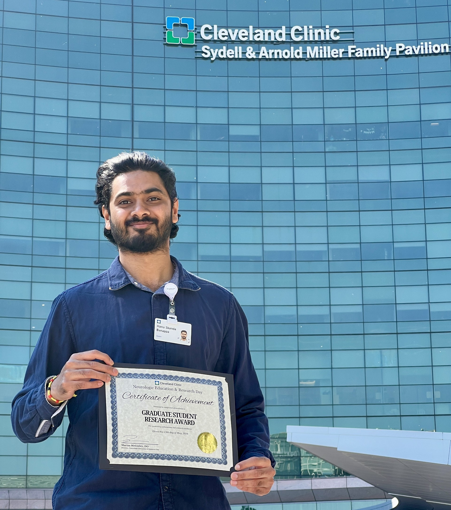
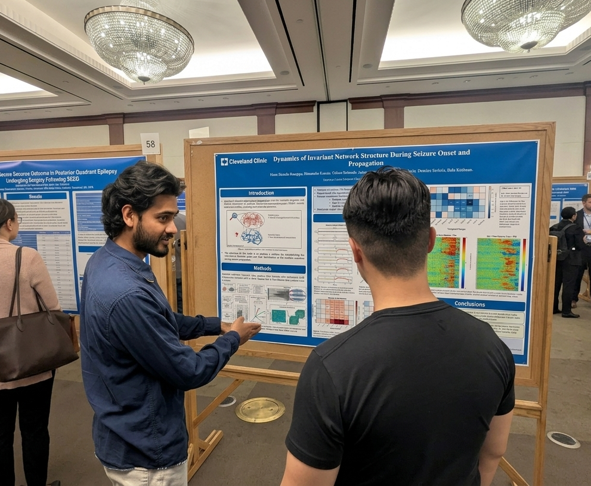

Neurological Education & Research Day 2026
Hanu Skanda Banappa Wins 1st Place Graduate Student Research Award
Hanu Skanda Banappa, PhD student in SPIKE Lab, received 1st place in the Graduate Student Research Award category for his poster, "Dynamics of Invariant Network Structure During Seizure Onset and Propagation."

Event
Neurological Education & Research Day (NERD), organized by the Neurological Institute of Cleveland Clinic, brings together the NI community to connect and celebrate innovations across neurological care, education, and research.
- Date
- May 13, 2026
- Venue
- InterContinental Hotel, Cleveland, Ohio
- Award
- 1st place, Graduate Student Research Award
Poster
The poster presents a functional-microstate framework for characterizing seizure networks by separating stable, low-dimensional invariant structures from rapidly varying seizure dynamics in stereo-electroencephalography data.

Abstract Summary
The study analyzed SEEG recordings from patients with drug-resistant temporal lobe epilepsy to track invariant subspace dynamics across baseline, ictal, and postictal periods. The findings suggest that successful surgical intervention is associated with broader seizure-related reconfiguration of the underlying network backbone across frequency bands, while more limited changes may indicate that critical epileptogenic network nodes were not fully captured.